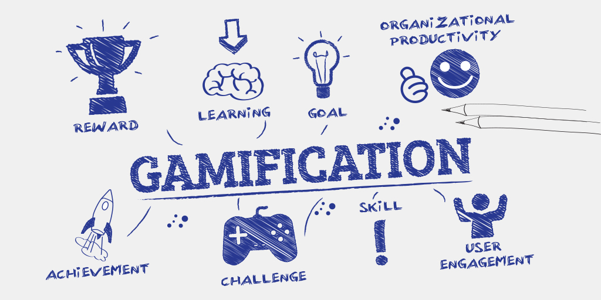
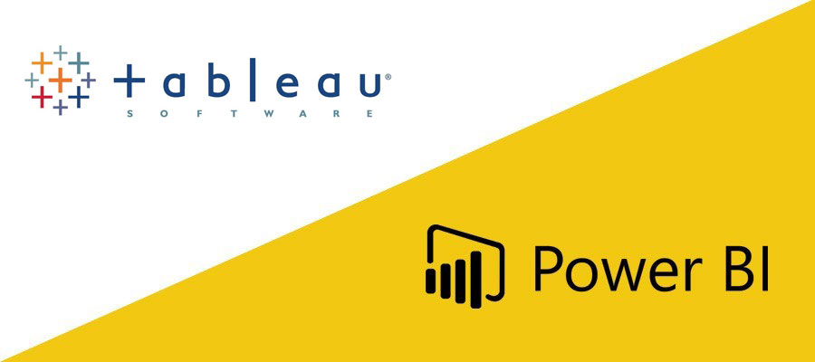
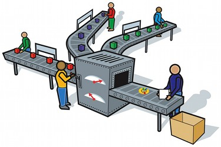
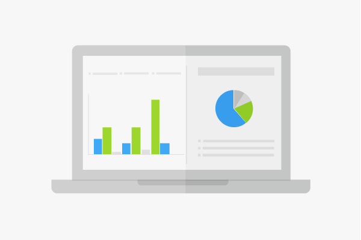

Portfolio
Check out some of my projects
Now that you know a little bit about me, I'd like to introduce you to some of the projects I've worked on. Please feel free to review them and if you have any questions, suggestions or just want to exchange an idea about any of them, please don't hesitate to get in touch with me!
Gamification with Data

Increasing Sales and Engagement with Gamification
Big Data Analytics & GamificationData and BI Project

Tool Transition and Optimization (Brazilian Bank)
Data Engineer & Business IntelligenceData Intelligence Project

VBA System Development and Business Indicators
Data structuring & Business Intelligence
Barbershop network expansion system
Creation of an entire system in VBA, with a module for purchases, sales, customer control and a management Dashboard in Power BI so that managers can control and take actions faster and more assertively and in a data-driven manner.
Results: With the system and good use of data, we were able to expand the barbershop more efficiently, being able to move to a location where it would be good for most customers based on our data and, finally, successfully achieving an expansion of the barbershop to nearly triple the capacity (and more than triple the revenue).
Development of the best indicators to find the production bottleneck and increase team performance

Data-Driven Production Management
Big Data Analytics & ForecastingBusiness Intelligence Project
